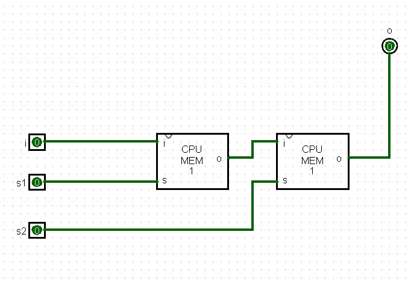
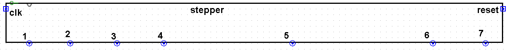

Counting Steps: the Stepper
Sections 11.5 – 11.8 | Estimated time: ~1 hour
11.5 Which transfer is this?
The clock shapes one transfer. An instruction is several. ADD R0, R1 on your core is three transfers — RB to TMP, RA to ACC and FLAGS, ACC to RB — and in Week 13, when your CPU fetches its own instructions from RAM, three more come first. Six transfers, and in each one a different set of lines must go high.
So the control unit has to know, at every moment, which transfer it is on. Knowing something that the inputs alone cannot tell you is memory. The circuit that holds it is the stepper, and you will build it from the one-bit cell you built in Week 4: twelve MEM_1BITs and a handful of gates. Its outputs are seven lines, step1 to step7, and exactly one of them is high at a time.
11.6 Two cells in a row

MEM_1BIT cells in series, each with its own set line, s1 and s2.Put a 1 on i and pulse s1: the first cell takes the 1. Pulse s2: the second cell takes the first cell’s 1, and o goes high. The 1 has moved one place along. Chain six of these pairs and pulse s1, s2, s1, s2… and the 1 walks down the chain one place per pulse. Your instructor’s first stepper video does exactly this, by hand: “set one on, off, set two on, off, move to the next one.”
Why two cells per place, and not one? Because a cell is transparent while its set line is high. If every cell were set at the same time, a 1 entering the first cell would run straight through all twelve in a single pulse. With two set lines that are never high together, each pulse opens only every other cell, and the 1 can advance just one cell before the door behind it closes.
You have seen this idea before. In Week 4, the edge-triggered flip-flop was built from two latches with opposite enables, a master and a slave, never open at the same time, so that the output changes only at the edge between them. Week 4’s master was open while the clock was 0, so its output changed on the rising edge. Drive s1 with clk and s2 with NOT clk, and each pair of your cells is the mirror image: the master is open while clk is 1, the slave while it is 0, and the pair’s output changes on the falling edge. A master-slave flip-flop, made from your own cells.
11.7 Twelve cells, seven steps
![A wide Logisim circuit. Twelve small blocks labelled cpu mem 1 sit in a row, wired output to input. Input pins reset and clk are on the left. Reset passes through a NOT gate into the first block's input. Two OR gates on the left combine reset with clk, and reset with NOT clk; their outputs run along the bottom to the set inputs of alternate blocks. Above the row, seven outputs labelled step 1 to step 7: step 1 comes from an OR gate, steps 2 to 6 each from an AND gate, and step 7 straight from the last block. A row of NOT gates feeds the AND gates.](images/stepper-chain.png)
Number the cells Q1 to Q12 from the left. The wiring, all of it:
Reset empties the chain. With reset = 1, both OR gates output 1, so every cell is open at once, and the first cell’s input is NOT 1 = 0. The 0 runs through all twelve. Every Q is 0, and step1 = 1.
Then ones pour in from the left. With reset back to 0, the first cell’s input is a permanent 1. Each time clk goes high the odd cells open: Q1 takes that permanent 1, and Q3, Q5 and the rest each take the value of the cell before them. Each time clk goes low the even cells do the same. Every full clock cycle, the run of 1s grows by one pair:
It is a thermometer: the chain fills from the left, and the lit step is the one where the 1s end. That is why step k is Q(2k−2) AND NOT Q(2k): “the 1s have reached pair k−1 but not pair k.” Exactly one AND gate can be true at a time.
Step 7 starts it again. When the 1s reach Q12, step7 goes high. The control unit wires step7 straight back to reset, so the moment step 7 appears it empties the chain, Q12 falls, step7 falls with it, and step1 is lit. Step 7 lasts only as long as it takes the reset to ripple through — too short to see in Logisim — and the stepper goes 1, 2, 3, 4, 5, 6, 1, 2…
When does the step change? The step outputs read the even cells, which take their new values when clk falls. Look back at page 1’s table: clk falls on the fourth quarter, the one in which clk_e drops to 0. So the step only ever changes while every enable is off. No register is driving the bus or capturing from it at the instant the control unit switches to the next step’s lines. The clock and the stepper were designed together.
Set reset’s pull behaviour to pull-up and clk’s to pull-down, as your instructor’s build notes say. After Simulate → Reset, his stepper comes up on step 1, with step7 as its only reset. That is a description of how Logisim behaves with this circuit, not a derivation: on paper every MEM_1BIT starts at E. If yours does not come up on step 1, check the two pull settings and the step7-to-reset wire before anything else.
11.8 Six steps, 24 clicks

clk at the left, reset at the right, the seven steps along the bottom, where they drop straight into the control unit’s gates. The uneven spacing leaves room for the gates under steps 4 and 5, which have the most to do.Every instruction takes all six steps, and every step is four quarters, so every instruction takes 24 clicks of clk_in — from step 1, enable on, back to step 1, enable on. Steps 1 to 3 will be the fetch, the same for every instruction. Steps 4 to 6 are the instruction itself. An instruction that needs fewer steps, like CLF, which does all its work in step 4, still waits through steps 5 and 6 doing nothing. Page 4 comes back to what that costs.
For sequencing and the clock in a second voice, log into your Saylor CS301 account at the CS301 course page and open Unit 5: Designing a Processor. CS301’s multi-cycle MIPS keeps its step in a state register; yours keeps it in a chain of latches.
Where you are
You can read a step from the stepper’s cells, say when it changes, and count the clicks in an instruction. Next page: the gates that turn “step 5” and an instruction byte into rega_e, acc_s and flags_s.